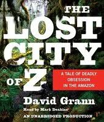

|  | The Lost City of Z: A Tale of Deadly Obsession in the Amazon is the debut non-fiction book by American author David Grann. The book was published in 2009, and recounts the activities of the British explorer Percy Fawcett who, in 1925, disappeared with his son in the Amazon while looking for an ancient lost city. |